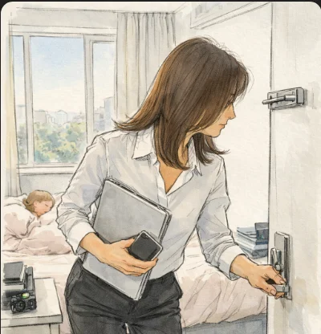

She woke before the alarm, light already in the room. The curtain was open, the morning pale and unfiltered, spreading evenly across the walls and the foot of the bed. For a moment she stayed still, letting her eyes adjust. Her head felt heavy—not aching, not dizzy, just weighted, as if it took a second longer than usual for thoughts to surface. Her younger daughter slept beside her, turned toward the wall, one arm tucked beneath the pillow. They shared the bed now, a king-sized one that felt too large at night and oddly cramped in the morning. She shifted carefully, mindful of the child’s breathing, and felt the familiar pressure of the shorts against her waist and thighs. She had chosen them on purpose the night before. They were never loose. She liked that about them—the way they held her, the certainty of their fit. Tight, but predictable. This morning, though, something felt wrong. She slid her hand down and touched the zipper. It wasn’t centered. It leaned slightly to one side—not open, not broken, just slanted. She tried to straighten it with two fingers, but the fabric resisted, pulling the angle back into place. The shorts themselves fit exactly as they always had. It was the zipper that unsettled her, the small refusal to align. She sat up slowly. The heaviness in her head shifted but didn’t lift.
The room was simple. An embedded wardrobe lined one wall, its doors closed. A low dresser stood close to the end of the bed, leaving only a narrow gap. On her side, a small metal file cabinet served as a nightstand. Her laptop rested on top, lid closed. Beside it, a small camera sat upright, its indicator light on. She noticed this immediately and looked away. On the other side of the bed, a plastic nightstand held a tissue box and a cup with a few pens. Above the door, the metal bolt caught the light. The door was locked. The washroom door stood half open, the mirror inside already reflecting the morning. She stood and moved quietly to the window. Outside, the street was beginning to stir—early walkers, a passing car. She turned her body sideways and lowered herself into a half squat beside the bed, positioning herself carefully in front of the window but below its line of sight. Her movements were practiced, economical. She changed quickly. The pajama top came off first, then the shorts, folded and placed on the edge of the bed. She pulled on a blouse, buttoning it without looking, then stepped into long black pants, smoothing the fabric at the hips. The zipper closed straight this time. She did not pause to consider that. She stood, glanced once at the sleeping child, then crossed to the nightstand. She picked up her computer and slipped her phone into her pocket. The camera remained where it was, still on, its small light steady. She moved to the door, unlocked it, and lifted the bolt as quietly as possible. Before opening it, she paused—not listening for sound, but waiting for something inside herself to settle. It didn’t. She slipped out of the room and closed the door behind her, leaving the light, the bed, and the morning exactly as they were.
